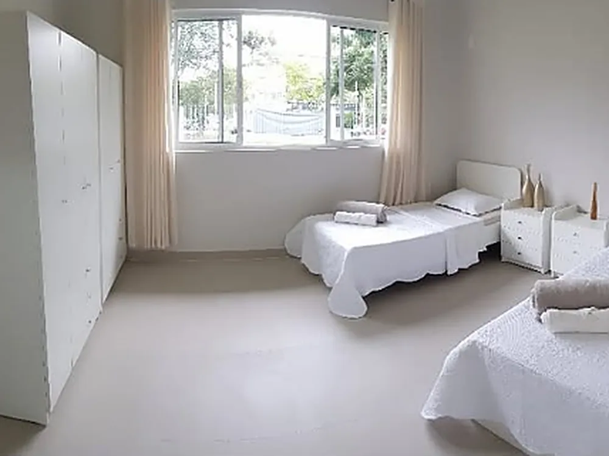

Longa permanência
Para quem passa a morar na casa. É a modalidade de quem precisa de acompanhamento contínuo e de uma rotina estável, com a segurança de ter enfermagem por perto todos os dias.
- Acomodação individual, dupla ou tripla
- Atendimento do grau 1 ao grau 3 de dependência
- Enfermagem 24 horas e controle de medicação
- Seis refeições por dia com acompanhamento nutricional
- Limpeza, lavanderia e atividades incluídas